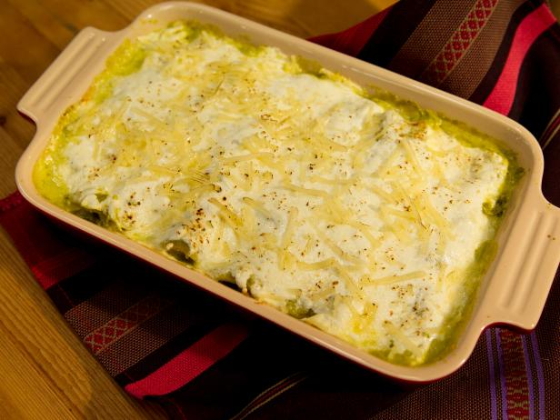

Enchiladas Suizas

Description
Enchiladas suizas verdes is a popular Mexican dish made with corn tortillas stuffed with shredded chicken and bathed with a creamy green sauce flavored with hints of cilantro and jalapeño. The dish is then topped with cheese and baked to perfection.
Ingredients
- 9 Tomatillos, husked and rinsed
- 1/4 White Onion
- 1 serrano chile
- 1 yellow chile (guerito peper)
- 2 cloves garlic
- 1/4 bunch fresh cilantro
- Salt and Pepper
- 1/2 cup Mexican crema
- 1/2 cup heavy cream
- Vegetable oil, frying
- 6 corn tortillas
- 1 1/2 cup shredded chicken
- 1/2 cup shredded Oaxaca or mozarella cheese
Steps
- Preheat the oven to 350 degrees F.
- Put the tomatillos, onion and both chiles in a medium heavy saucepan, cover with water and bring to a boil over medium-high heat. Boil until the tomatillos turn an olive-green color, about 10 minutes. Drain and transfer the tomatillos, onions and chiles to a blender. Add the garlic and cilantro and blend until smooth. Season with salt and freshly ground black pepper.
- Mix the Mexican crema and heavy cream together in a small bowl and season with salt. Set aside.
- Heat 1 tablespoon oil in a small skillet over medium-high heat. Fry the tortillas until golden but still pliable, about 10 seconds per side, using more oil if needed. Transfer to paper towels to drain.
- Place the tortillas on a work surface. Divide the shredded chicken evenly among the tortillas and roll up each like a cigar. Spread 1/3 cup of the sauce in a 13-by-9-by-2-inch glass baking dish. Arrange the enchiladas in 1 layer, seam-side down, snugly inside the dish. Pour the rest of the sauce over the enchiladas. Drizzle the cream mixture on top and sprinkle the cheese all over.
- Bake until the cheese is melted and starting to brown in spots, about 30 minutes. Serve immediately.